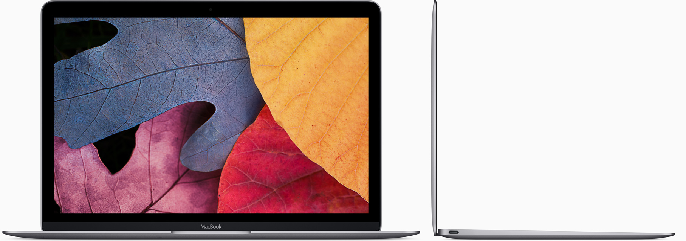

MacBook
Light. Years ahead.
Our goal with MacBook was to do the impossible: engineer a full-sized experience into the lightest and most compact Mac notebook ever. That meant reimagining every element to make it not only lighter and thinner but also better. The result is more than just a new notebook. It’s the future of the notebook. And now, with sixth-generation Intel processors, improved graphics performance, faster flash storage and up to 10 hours of battery life,* MacBook is even more capable.
13.1mm
920 g
12-inch
10hr
THIN
LIGHT
RETINA DISPLAY
BATTERY LIFE*
Available in silver, gold, space grey and all-new rose gold.

A Retina display that takes everything to the edge.
The moment you open your MacBook, its gorgeous 12-inch Retina display with edge-to-edge glass brings everything into focus. Every photo leaps off the screen in rich, vibrant detail. Over three million pixels render each letter with crystal clarity. And it all comes to light on the thinnest Retina display ever on a Mac, meticulously honed to deliver a bold visual experience within an impossibly minimal design.
12-inch
2304 ×1440
16:10
Retina display
resolution
aspect ratio
A full-sized keyboard.
In a fraction of the space.
In a fraction of the space.
We believe that a comfortable, full-sized keyboard is essential for a great notebook experience. But to fit one into the elegantly thin MacBook, we had to completely rethink how a keyboard is engineered and constructed. We redesigned each key and its underlying mechanism — not only making the whole keyboard much thinner, but also allowing for more comortable, precise and responsive typing that just feels right.
Learn more about Design
Learn more about Design

The trackpad, pushed even further with Force Touch.
MacBook comes with a different way to experience a trackpad. The Force Touch trackpad is engineered to deliver a responsive, uniform click no matter where you press the surface. And underneath, force sensors detect how much pressure you’re applying. You can now use a Force click to enable useful capabilities, like quickly looking up the definition of a word or previewing a file just by clicking and continuing to press the trackpad. You’ll also experience haptic feedback — a tactile vibration from the trackpad that adds the sense of touch to what you see on the screen. These advanced capabilities work in addition to all the intuitive Multi-Touch gestures Mac users love. You’ll be more in touch with your Mac than ever before. Without lifting a finger.
Learn more about Design
Learn more about Design

Fully equipped for a wireless world.
MacBook is designed to fit effortlessly into our increasingly wireless world. Just about anything you do with a notebook can now be done over the air, thanks to Apple software that takes full advantage of the latest Wi-Fi and Bluetooth wireless technology. So no matter where you are, you can connect to the web, transfer files, organise your photos, listen to music and more — without being tied down.
Learn more about Design
Learn more about Design
USB-C.Singularly versatile.
As long as we were including a port for charging your MacBook, we wanted to make sure it was the most advanced and versatile one available. The USB-C port puts just about everything you need in a port all in one place. This amazing port provides charging, speedy USB 3 data transfer and video output in a reversible design that’s one third the size of a USB 3 port, giving you the flexibility to easily connect your favourite devices.
The capability to connect to everything you need.
We gave a lot of consideration to the way MacBook connects to peripherals and power. We chose USB-C for its compact design and versatility. This single port lets you connect your charger, HDMI, DisplayPort and VGA displays, USB devices like external drives, and your iPhone or iPad. All of which goes to show that sometimes less really is more.

Quietly astonishing.
MacBook has been engineered from the ground up for silent, efficient performance. It includes sixth-generation Intel Core M processors that run on just 5 watts of power, made even more efficient by optimisations throughout macOS. Together, the processor and macOS sip so little energy that the system generates very little heat, so no fan is required to cool the computer. That means when your MacBook is working, you won’t hear a thing. And the logic board on which the processor sits has been painstakingly engineered to pack all the capability you expect in a Mac into as little space as possible.
Learn more about Design
Learn more about Design

Measurably faster.
MacBook features sixth-generation Intel Core m3, m5 and m7 processors with speeds of up to 1.3GHz and up to 25 per cent faster graphics. It also comes with faster 1866MHz memory. So the new MacBook is quicker and more responsive.
All-day battery life.
Now even longer.
With the slim MacBook enclosure, all-day battery life simply would not be achievable using traditional rectangular batteries. So we developed our own battery technology specifically designed to make use of every last millimetre of available space. The result is a terraced, contoured battery design that not only fits perfectly inside the incredibly slim MacBook, but also is unlike anything seen before in a notebook. And now, thanks to more efficient processors and improved battery chemistry, battery life has been extended by an hour.
Learn more about Design
Learn more about Design

macOS
macOS is the operating system that powers everything you do on a Mac. macOS Sierra introduces Siri to Mac — along with new ways to enjoy your photos and work more seamlessly between devices.
Learn more about macOS
Learn more about macOS

Built-in Apps
Every Mac comes with apps for creativity and apps for productivity. It also comes with a collection of great apps for things you do every day, like surfing the web, sending mail and messages, and organising your calendar. It even comes with an app for finding new apps. Your Mac is more than full-featured, it’s fully loaded.